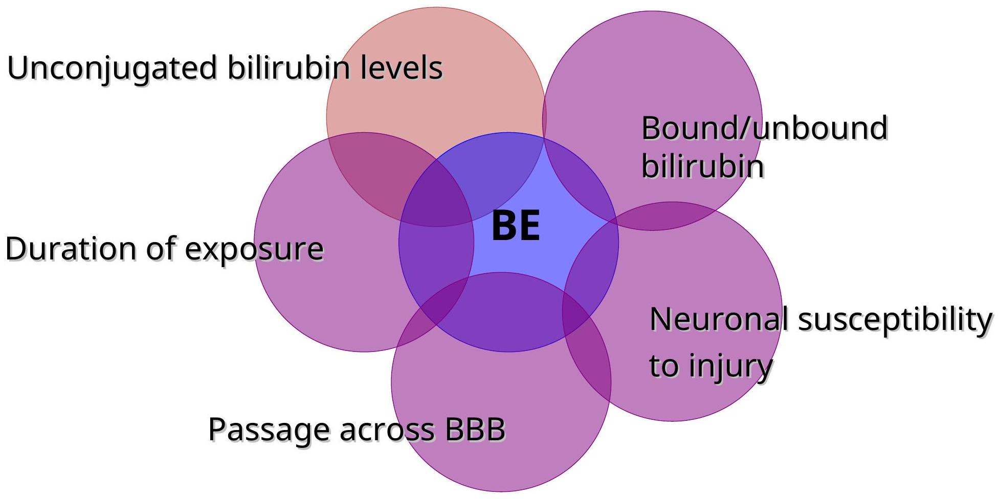

Kernicterus and Clinical Features
Clinical features
- Jaundice may be present at birth or may appear at any time during the neonatal period, depending on etiology.
- Jaundice usually becomes apparent in a cephalocaudal progression, starting on the face and progressing to the abdomen and then feet, as serum levels increase.
- Dermal pressure may reveal the anatomic progression of jaundice (face, $=5 \mathrm{mg} / \mathrm{dL}$; mid-abdomen, $=15 \mathrm{mg} / \mathrm{dL}$ soles, $=20 \mathrm{mg} / \mathrm{dL}$
- clinical examination cannot be depended on to estimate serum levels.
Whereas jaundice from deposition of indirect bilirubin in the skin tends to appear bright yellow or orange, jaundice of the obstructive type (direct bilirubin) has a greenish or muddy yellow cast.
signs of kernicterus rarely appear on the 1st day
- affected infants may present with lethargy and poor feeding
- without treatment, can progress to acute bilirubin encephalopathy
Laboratory Evaluation of the Jaundiced Infant of 35 or More Weeks' Gestation
- Jaundice in first 24 hr
- Measure TcB and/or TSB
- Jaundice appears excessive for infant's age
- Measure TcB and/or TSB
- Infant receiving phototherapy or TSB rising rapidly and unexplained by history and physical examination
- Blood type and Coombs test,
- Complete blood count and smear
- Measure direct or conjugated bilirubin
- It is an option to perform reticulocyte count
- Repeat TSB in 4-24 hr depending on infant's age and TSB level
- TSB concentration approaching exchange levels or not responding to phototherapy
- Perform reticulocyte count,
- G6PD
- albumin
- Elevated direct (or conjugated) bilirubin level
- Do urinalysis
- urine culture.
- Evaluate for sepsis if indicated by history and physical examination
- Jaundice present at or beyond age 3 wk , or sick infant
- Total and direct (or conjugated) bilirubin level
- If direct bilirubin elevated, evaluate for causes of cholestasis
- Check results of newborn thyroid and galactosemia screen
- evaluate infant for signs or symptoms of hypothyroidism
Kernicterus
DEFINITION
- Neurological syndrome resulting deposition of unconjugated bilirubin in the basal ganglia and brainstem nuclei
- Kernicterus $\equiv$ Bilirubin encephalopathy
- pathogenesis
- multifactorial
- involves an interaction between
- unconjugated bilirubin levels,
- albumin binding
- unbound bilirubin levels
- passage across the blood-brain barrier,
- neuronal susceptibility to injury.
Pathogenesis
Multifactorial involvement
Bilirubin toxicity-
- Factors that Increases permeability of BBB or nerve cell membranes to bilirubin or
- Disruption of the blood-brain barrier
- Asphyxia
- Prematurity
- Hyperosmolality
- Infection
Mechanism of toxicity
- Unclear but several postulations
- Inhibits mitochondrial enzymes interfering with DNA synthesis
- Induces DNA strand breakage
- Inhibits protein synthesis and phosphorylation
Critical levels
- Precise level of the bilirubin at which Kernicterus occurs unknown
- Encephalopathy develops $>30 \mathrm{mg} / \mathrm{dL}$ in term healthy infants without hemolysis (21-50 $\mathrm{mg} / \mathrm{dL}$)
- All infants with hemolysis have risk directly proportional to the serum bilirubin levels
- VLBW infants $8-12 \mathrm{mg} / \mathrm{dL}$ associated with Kernicterus
- The less mature the infant the greater the susceptibility to Kernicterus
Clinical forms
signs and symptoms usually appear 2-5 days after birth in term infants and as late as $7^{\text {th}}$ day in premature
Early sign not indistiguishable from
- Sepsis
- asphyxia
- hypoglycemia
- intracranial hemorrhage
Acute form - 3 phases
- Phase 1-1-2days;
- poor suckling;
- $\downarrow$ mororeflex+deep tendon reflexes;
- lethargy;seizures;
- respiratory distress
- stupor
- Phase 2-mid 1st $\mathrm{wk}-$
- hypertonia of extensor muscles
- opisthotonous
- bulging fonatnelles
- high pitched cry
- Twitching
- Phase 3-after wk1-
- hypertonia
- Spasms
- Convulsions
- posturing
Chronic form
- Year 1-opisthotonus;
- hypertonia;
- active deep tendon reflexes;
- obligatory tonic neck reflexes;
- delayed motor skills;
- rigidity and convulsion
- After year 2-movt disorders e.g.
- bilateral choreoathetosis;
- ballismus;
- tremors
- Seizures
- mental deficiency;
- disarthric speech;
- sensorineural hearing loss;
- upward gaze abnormalities
Pathology
Generalized yellow staining of the brain which later localizes to:-
- Corpus subthalamicum
- Hippocampus
- Olfactory area
- Striate bodies
- Thalamus
- Globus pallidus
- Inferior clivus
- Putamen
- Cerebellar and cranial nerve nuclei